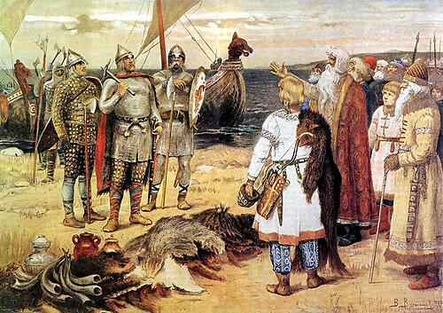
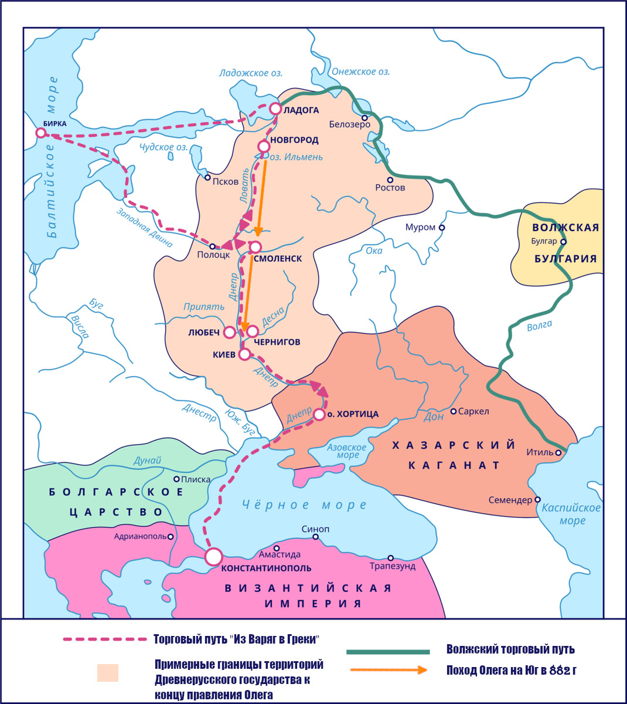
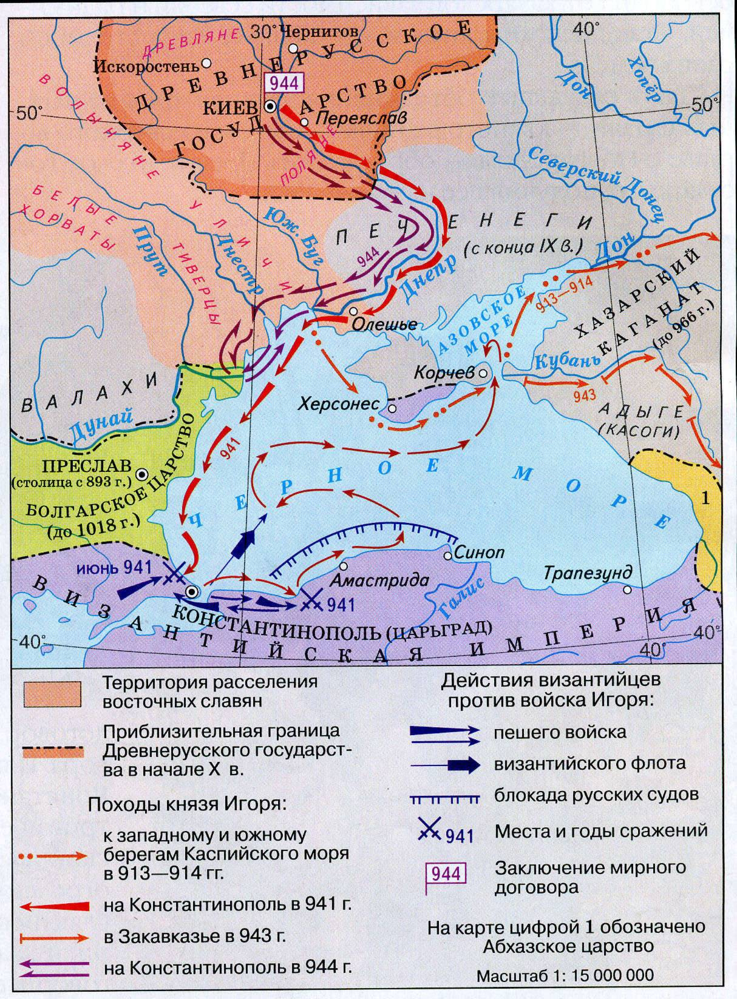
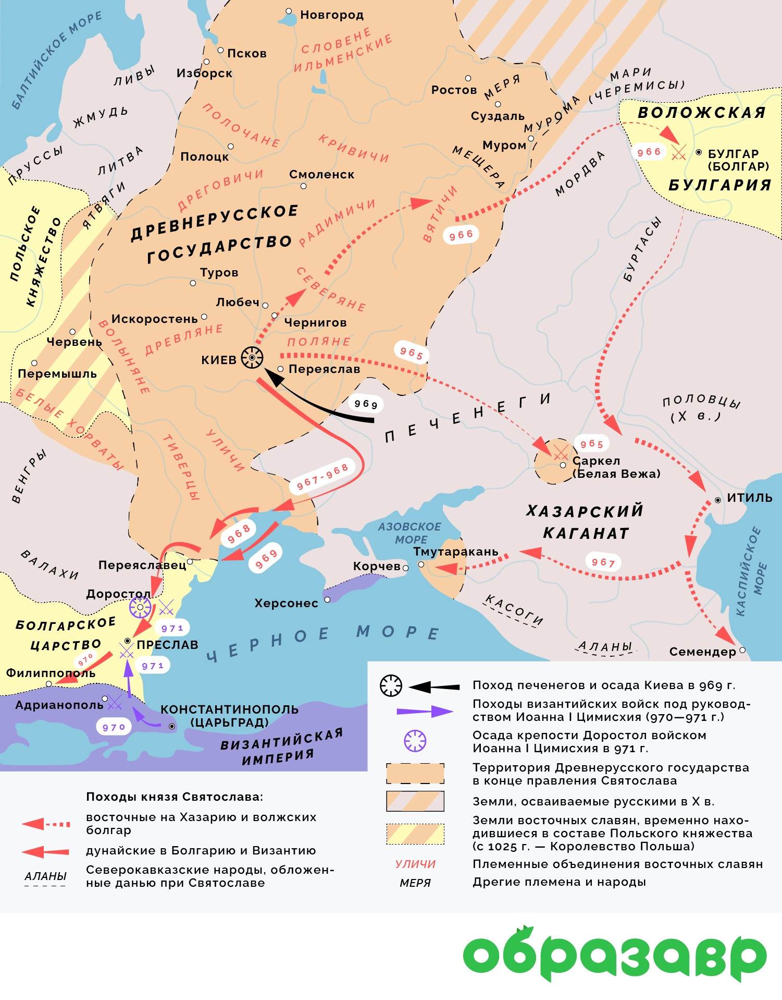
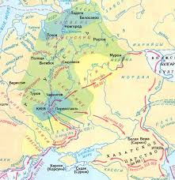
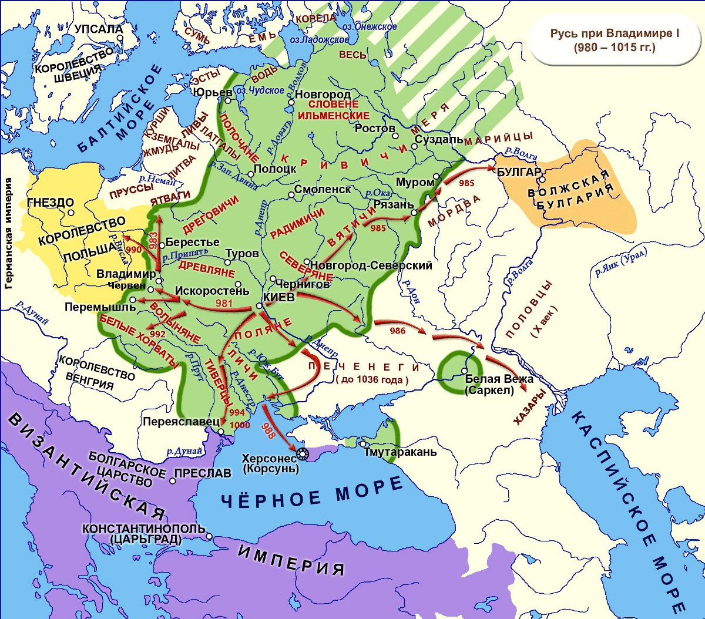
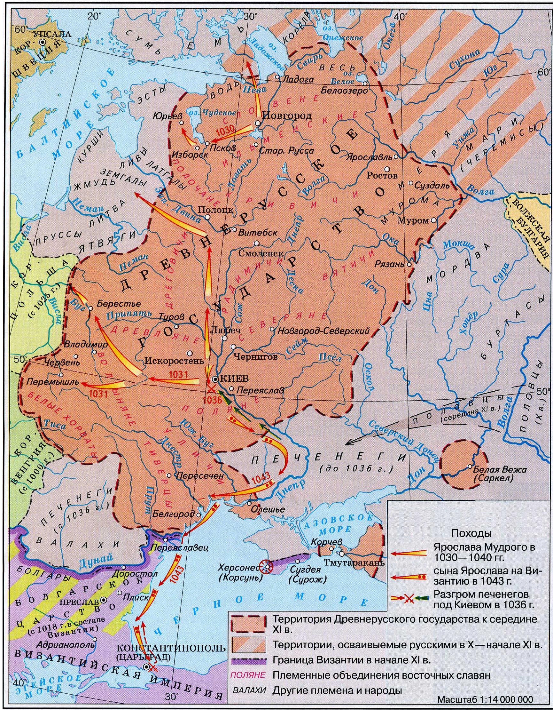
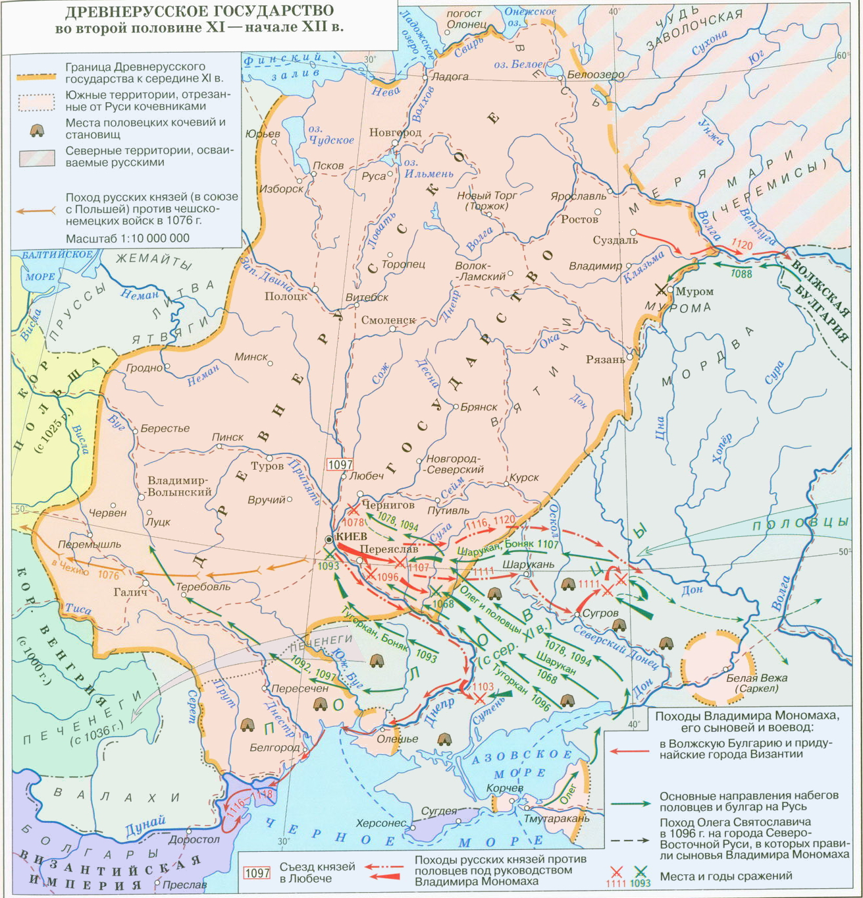

Материал для подготовки
Князь Рюрик
Князь Рюрик был первым князем Руси, начав княжить в 862 году!
Согласно "Повести временных лет", он был призван на княжение ильменскими словенами, кривичами, чудью и
весью для прекращения междоусобиц.
Рюрик стал основателем династии Рюриковичей, правившей Русью до конца XVI века.
После смерти своих братьев Синеуса и Трувора Рюрик объединил северные земли под своей властью с центром в
Новгороде.
Его преемником стал Олег Вещий, который правил от имени малолетнего сына Рюрика — Игоря.
Некоторые даты
862 - призвание варягов и вот картинка, связанная с этим событием!

Олег Вещий
Олег Вещий был вторым князем на Руси, который объединил Киев и Новгород.
В 882 году он захватил Киев, убив Аскольда и Дира, и сделал его столицей Древнерусского государства,
сказав: "Да будет Киев матерью городов русских".
Олег подчинил древлян, северян и радимичей, освободив их от дани Хазарскому каганату.
Также совершил успешные походы на Византию (Константинополь/Царьград).
По преданию, в знак победы Олег прибил свой щит к вратам Царьграда.
Умер в 912 году от укуса змеи, выползшей из черепа его умершего коня — так гласит легенда, изложенная
Пушкиным в "Песне о вещем Олеге".
Некоторые даты
882 - захват Киева Олегом Вещим
907, 911 - Походы князя Олега на Константинополь,
заключение выгодных торговых договоров с Византией.

Игорь Старый
Игорь Старый получил свою власть после смерти Олега в 912 году.
Совершал походы на печенегов и также на Царьград.
Был убит древлянами в 945 году за попытку повторно собрать дань.
Игорь подавил восстание древлян в 914 году.
Поход на печенегов в 920 году.
Первый поход на Византию в 941 году и второй поход на Византию в 944 году.
И также интересно вот что:
941 год: Первый поход на Царьград (Византию). Закончился поражением: русский флот был сожжён «греческим
огнём».
- 944 год: Второй поход на Византию. Был более подготовленным, но завершился заключением мирного
договора на менее выгодных условиях, чем при Олеге.
- После смерти Игоря правила его жена — княгиня Ольга, так как их сыну Святославу было всего 3 года.
944 год: Второй поход на Византию
941 год: Первый поход на Царьград (Византию)
914 год: Подавление восстания древлян
920 год: Поход на печенегов

Княгиня Ольга
Княгиня Ольга правила Русью с 945 по 960 год после смерти мужа Игоря.
Она жестоко отомстила древлянам за убийство мужа: сожгла их столицу Искоростень с помощью птиц, к которым
велела привязать горящую паклю.
В 957 году Ольга приняла христианство в Константинополе, став первой правительницей Руси, крестившейся
лично (задолго до массового крещения).
Установила чёткую форму дани — УРОКИ.
И места сбора дани — ПОГОСТЫ.
Эти реформы упорядочили сбор налогов и укрепили центральную власть.
Позднее была канонизирована Русской православной церковью как святая равноапостольная княгиня Ольга.

Святослав Воитель
Святослав Игоревич правил с 960 по 972 год и прославился как князь-воин.
Перед битвой он посылал врагам предупреждение: "Иду на Вы!"
Устраивал походы на:
- Вятичей — подчинил их в 964-966 годах
- Хазарский каганат — разгромил его в 965-969 годах, каганат перестал существовать как сильное
государство
- Волжскую Булгарию и Кавказ — 965-968 годы
- Дунайскую Болгарию — 968-971 годы, хотел перенести столицу в Переяславец на Дунае
В 971 году потерпел поражение от византийского императора Иоанна Цимисхия и был вынужден заключить мир.
Погиб в 972 году при возвращении в Киев — его убили печенеги у днепровских порогов. Из его черепа
печенежский хан Куря сделал чашу для пиров.
Можно понять, что это он по сердечку воевал!

Владимир Святой
Владимир Святославич правил с 978 по 1015 год.
Главное, что он сделал — это Крещение Руси в 988 году.
До крещения Владимир был ярым язычником, провёл языческую реформу, установив пантеон богов во главе с
Перуном.
Выбор веры: по легенде, Владимир выслушал послов от ислама, иудаизма, западного и восточного христианства и
выбрал православие из-за красоты службы в Софийском соборе Константинополя.
Вот что он делал ещё:
- Укрепление границ (981–990-е): Подчинение вятичей и радимичей, вернувшихся под власть Киева.
- Западное направление (981): Завоевание Червенских городов (Червен, Перемышль) у Польши.
- Борьба с кочевниками: Походы против ятвягов, радимичей, волжских булгар и печенегов.
- Строительство оборонительных рубежей на юге — "Змиевы валы" для защиты от печенегов.
- Поход на Корсунь (988): Захват византийского города Херсонеса в Крыму, что стало ключевым условием
для крещения князя и брака с Анной, сестрой византийских императоров.
- Хазарский поход (985): Ослабление Хазарского каганата.
- Крещение Руси (988): Сделал христианство государственной религией, способствуя объединению земель и
повышению международного авторитета Руси.
- Строительство Десятинной церкви (996): Первая каменная церковь на Руси, ставшая центром культуры. На
её содержание выделялась десятая часть княжеских доходов.

Ярослав Мудрый
Ярослав Владимирович правил с 1019 по 1054 год и сделал очень много для Руси!
Пришёл к власти после ожесточённой междоусобной войны с братом Святополком Окаянным, в которой погибли их
братья Борис и Глеб (первые русские святые).
Военные походы:
- 1030–1031 гг.: Поход на Польшу совместно с братом Мстиславом, возвращение Червенских городов.
- 1030 г.: Поход на чудь (прибалтийские племена), основание города Юрьев (ныне Тарту, Эстония).
- 1036 г.: Окончательный разгром печенегов под Киевом, прекращение их набегов на Русь. В честь этой
победы построен Софийский собор в Киеве.
- 1038–1047 гг.: Успешные походы против ятвягов, мазовшан и других племён.
- 1043 г.: Последний поход Руси на Византию (неудачный), завершившийся мирным договором в 1046 году.
Также его реформы!
- Законодательство: Создал «Правду Ярослава» — древнейшую часть «Русской Правды», регулировавшую
правовые отношения. Ограничивал кровную месть, вводил штрафы за преступления.
- Культура и строительство: Построил Софийский собор в Киеве (1037) и Новгороде, возвёл Золотые ворота
в Киеве.
- Просвещение: Открыл училище для детей (300 человек обучались в Новгороде), собирал и переводил книги
с греческого, основал первую библиотеку на Руси в Софийском соборе.
- Дипломатия: Укрепил международный авторитет через «семейную дипломатию» — династические браки детей с
правителями Швеции, Византии, Германии, Венгрии, Польши и Франции. Его дочь Анна стала королевой
Франции.
- Церковь: Установил церковную иерархию, поставив первого русского митрополита Илариона без согласия
Константинополя (1051 год).
Время Ярослава Мудрого считается расцветом Киевской Руси.

Наследники Ярослава Мудрого
После смерти Ярослава Мудрого в 1054 году Русь была разделена между его сыновьями согласно лествичной
системе наследования.
Триумвират Ярославичей (Изяслав, Святослав, Всеволод) пытался сохранить единство, но междоусобицы
усиливались.
Очень важные даты:
- 1072 г. — создание «Правды Ярославичей» (дополнение к «Русской Правде»), защита княжеского имущества.
- 1097 г. — Любечский съезд князей, на котором было сказано: "Да пусть каждый держит отчину свою". Это
закрепило раздробленность Руси юридически.
Итоги:
- Начался упадок Руси и переход к раздробленности.
- Государство ослабляли княжеские усобицы.
- Усиление натиска кочевников (половцев) на южные пределы страны.
- Был принят новый свод законов — «Правда Ярославичей».
- Свои противоречия Рюриковичи старались решить на съездах, но часто решения нарушались.
Русь при Владимире Мономахе
Владимир Всеволодович Мономах правил с 1113 по 1125 год и стал последним князем, которому удалось на время
восстановить единство Руси.
Был призван на киевский престол после восстания 1113 года в Киеве (народ громил дома ростовщиков).
Даты и его походы:
- 1080–1081 гг.: Походы против вятичей, непокорных киевской власти.
- 1076 г.: Богемский поход (помощь полякам против чехов).
- 1077–1078 гг.: Походы на Полоцк (против Всеслава Полоцкого).
- 1095–1097 гг.: Участие в съездах князей (Любечский съезд 1097 г.), целью которых было прекращение
междоусобиц и объединение против внешнего врага.
- 1103 г.: Долобский съезд и победоносный поход на половцев (битва на реке Сутень).
- 1107 г.: Разгром ханов Боняка и Шарукана.
- 1111 г.: «Крестовый поход» в глубь половецкой степи, битва при Сальнице, ставшая решающей для
обеспечения безопасности границ Руси от половцев.
Реформы и законодательная деятельность:
- «Устав Владимира Всеволодовича» (Устав о резах): Свод законов, который вошёл в «Русскую Правду». Он
ограничивал проценты по займам (резам), облегчая положение должников и предотвращая долговое
рабство, что успокоило народ после восстания 1113 года.
- Усиление княжеской власти: Жёстко подавлял неповиновение удельных князей, восстановив единство
Киевской Руси на время своего правления.
- Упорядочение судопроизводства: Разграничение светских и церковных судов.
Достижения и наследие:
- Остановка половецкой угрозы: Активными наступательными действиями обезопасил южные границы Руси.
- Объединение Руси: Своим авторитетом прекратил междоусобицы и подчинил большинство князей, укрепив
Киевский престол.
- Культурное наследие: Написал знаменитое «Поучение Владимира Мономаха» — литературный памятник,
содержащий наставления потомкам («не ленитесь», «чтите старших», «не давайте отрокам причинять
вред»).
- Восстановление экономического порядка: Ограничение ростовщичества помогло восстановить доверие к
власти.
Карта походов

Ссылка на поисковик дат
Ссылка на галерею